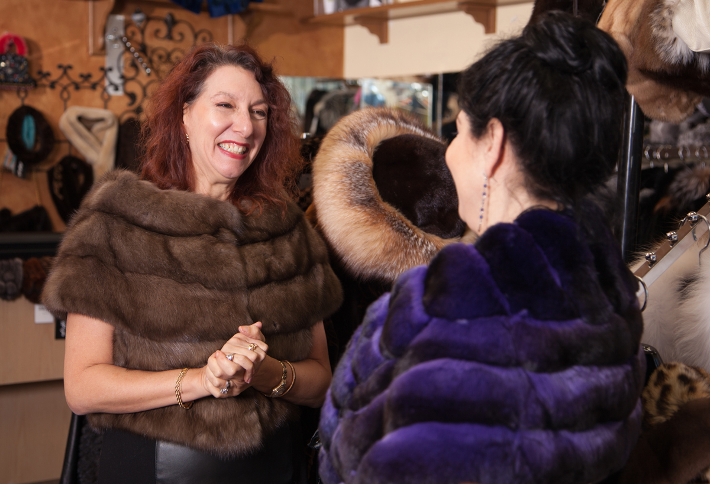

Kailiniai.lt | geriausi kailiniai - geriausiomis kainomis
 Į PRADŽIĄ E- PARDUOTUVĖ NUOTRAUKOS KONTAKTAI
Audinės kailiniai
€ 2.900,00Audinės kailiniai
€ 2.900,00Audinės kailiniai
€ 2.700,00Audinės kailiniai
€ 2.400,00Audinės kailiniai
€ 2.600,00Audinės kailiniai
€ 2.600,00Audinės liemenė
€ 1.700,00Audinės liemenė
€ 1.900,00Audinės puskailiniai
€ 1.900,00Audinės puskailiniai
€ 1.500,00Audinės puskailiniai
€ 1.200,00Audinės puskailiniai
€ 2.100,00E-PARDUOTUVĖ
Apmokėjimo būdai
Prekių pristatymas
Grąžinimo sąlygos
KLIENTAMS
Apie mus
Kur įsigyti
Didmeninė prekyba
Slapukai
KONTAKTAI
LAVE, MB
Įm.k. 305582290
Manufaktūrų g. 20, Vilnius
Tel. +37061008222
Privatumo apžvalga
Ši svetainė naudoja slapukus, kad pagerintų jūsų patirtį naršant svetainėje. Iš šių slapukų slapukai, kurie priskiriami būtinoms kategorijoms, yra saugomi jūsų naršyklėje, nes jie yra būtini pagrindinėms svetainės funkcijoms veikti. Mes taip pat naudojame trečiųjų šalių slapukus, kurie padeda mums analizuoti ir suprasti, kaip jūs naudojatės šia svetaine. Šie slapukai bus saugomi jūsų naršyklėje tik gavus jūsų sutikimą. Jūs taip pat turite galimybę atsisakyti šių slapukų. Tačiau atsisakymas kai kurių iš šių slapukų gali turėti įtakos jūsų naršymo patirčiai. Necessary Necessary Always EnabledNorint, kad svetainė tinkamai veiktų, būtini slapukai yra būtini. Į šią kategoriją įeina tik slapukai, užtikrinantys pagrindines svetainės funkcijas ir saugumo ypatybes. Šie slapukai nesaugo jokios asmeninės informacijos.
Non-necessary Non-necessaryVisi slapukai, kurie gali būti nebūtinai reikalingi interneto veikimui ir kurie yra naudojami specialiai rinkti vartotojo asmeninius duomenis naudojantis analitika, skelbimais ir kitu įterptuoju turiniu, yra vadinami kaip nebūtini slapukai. Prieš paleisdami šiuos slapukus savo svetainėje, privalote įsigyti vartotojo sutikimą.